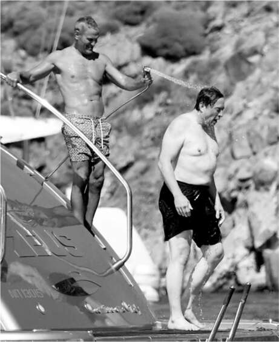
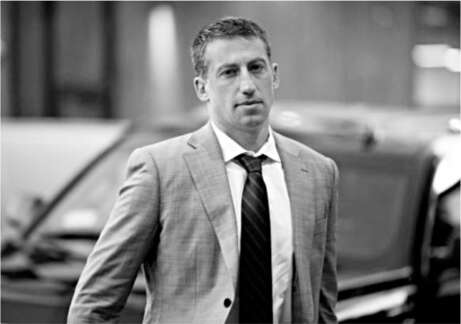

Kẻ hủy diệt
Không chắc chắn mình muốn làm gì với Twitter, Musk đã yêu cầu ba lựa chọn vào tháng 6 năm 2022. Phương án A là tiếp tục theo thỏa thuận với mức giá mua 44 tỷ đô la. Phương án B và C liên quan đến việc cố gắng định giá lại thương vụ hoặc hoàn toàn rút lui khỏi nó. Để hỗ trợ lập mô hình tài chính cho những lựa chọn này, ông đã mời Bob Swan, cựu CEO của eBay và Intel, đồng thời là đối tác tại công ty đầu tư mạo hiểm Andreessen Horowitz, công ty đang đầu tư vào lời đề nghị của Musk.
Vấn đề là Swan, một người thẳng thắn, lại ủng hộ Phương án A. Ông cảm thấy không có lý do chính đáng nào để rút khỏi thương vụ. Ông chấp nhận hầu hết các con số trong tuyên bố ủy quyền của Twitter, áp dụng một chút chiết khấu và trình bày một mô hình tài chính khá lạc quan. Musk, tin rằng thế giới đang bước vào suy thoái và Twitter đang báo cáo sai về vấn đề bot, đã tức giận phản bác Swan. “Nếu anh có thể trình bày điều này với tôi một cách nghiêm túc, thì có lẽ anh không phải là người phù hợp với công việc này,” ông nói.
Swan đã quá thành công để bị đối xử như vậy. “Vì tôi đã trình bày điều này với anh một cách nghiêm túc, anh nói đúng,” ông đáp. “Có lẽ tôi không phải là người phù hợp với công việc này.” Và ông đã từ bỏ.
Một lần nữa, Musk gọi cho người bạn thân và nhà đầu tư ban đầu của Tesla, Antonio Gracias, người có đội SWAT đã phát hiện ra các vấn đề tại Tesla vào năm 2007. Gracias đang đi nghỉ ở Châu Âu với một số con của mình khi nhận được cuộc gọi. “Anh đã nói khi rời khỏi hội đồng quản trị Tesla rằng tôi nên gọi cho anh nếu tôi cần giúp đỡ,” Musk nhắc nhở. Gracias đồng ý thành lập một nhóm để nghiên cứu sâu về tài chính của Twitter.
Gracias cảm thấy cần nhờ đến một ngân hàng đầu tư độc lập để đánh giá đúng giá trị và cơ cấu vốn. Ông đã trao đổi với Robert Steel của Perella Weinberg Partners, người đã thẳng thắn hỏi Musk mục tiêu của anh là gì: rút khỏi thương vụ Twitter hay mua Twitter với giá thấp hơn? Musk nói anh muốn lựa chọn thứ hai. Điều đó đúng, ít nhất là phần lớn thời gian, nhưng anh bị ràng buộc, cả về mặt pháp lý lẫn tâm lý, không thể nói ra điều thật sự hơn, đó là có những buổi sáng, và những đêm, anh cảm thấy mình đã vướng vào một việc làm ngu ngốc và sẽ vui mừng nếu mọi chuyện chấm dứt. Steel có một nhận định thú vị về Musk. Khi hầu hết khách hàng được đưa ra ba hoặc bốn lựa chọn, họ sẽ hỏi ngân hàng đề xuất lựa chọn nào. Musk, thay vào đó, lại hỏi chi tiết về từng lựa chọn nhưng không xin lời khuyên. Anh thích tự mình quyết định.
Khi Musk yêu cầu dữ liệu gốc và phương pháp xác định số lượng người dùng thật, Twitter đã cung cấp một lượng lớn dữ liệu ở định dạng mà nhóm của anh cho là gần như không thể sử dụng được. Musk đã dùng điều này làm cái cớ để tìm cách rút khỏi thỏa thuận. "Trong gần hai tháng, ông Musk đã tìm kiếm dữ liệu và thông tin cần thiết để đánh giá độc lập về tỷ lệ tài khoản giả mạo hoặc spam", luật sư của ông viết. Việc Twitter từ chối đồng nghĩa với việc Musk đang thực hiện "quyền chấm dứt Thỏa thuận sáp nhập".
Ban quản lý của Twitter đã phản hồi bằng cách kiện Musk tại tòa án Delaware, cáo buộc anh "từ chối thực hiện nghĩa vụ với Twitter và các cổ đông vì thỏa thuận anh đã ký không còn phục vụ lợi ích cá nhân của anh nữa". Thẩm phán Kathaleen McCormick đã ấn định ngày xét xử vào tháng 10.
Jared Birchall, quản lý kinh doanh của Musk, và luật sư Alex Spiro đã cố gắng ngăn anh gửi tin nhắn và tweet có thể làm suy yếu vụ kiện bằng cách ám chỉ rằng lý do anh muốn rút khỏi thỏa thuận là do quảng cáo đang sụp đổ và nền kinh tế suy thoái. "Tôi đang gọi cho anh ấy ngay bây giờ để nói với anh ấy đừng tweet nữa", Spiro nói với Birchall một ngày nọ. Nhưng Spiro giống như một người huấn luyện sư tử bất lực. Trong vòng mười phút, Musk đã gửi một loạt tweet dường như nhằm chọc tức đội ngũ pháp lý của mình. "Thế là hết chuyện nói về việc tweet rồi", Birchall nói với Spiro.
Ngay cả những tweet không liên quan và kỳ quặc của Musk cũng trở thành vấn đề. "Tôi sẽ mua Manchester United, không cần cảm ơn", anh đăng vào tháng 8. Birchall đã gọi cho Spiro để hỏi liệu SEC có thể coi đó là một tiết lộ không đúng hay không. "Anh ấy thực sự định làm vậy sao?", Spiro hỏi. Hóa ra Musk chỉ đang nói đùa về một meme về việc người hâm mộ Manchester United luôn cầu xin mọi người mua lại đội bóng. Spiro đã bắt anh ấy gửi một tweet tiếp theo: "Không, đây chỉ là một trò đùa lâu năm trên Twitter. Tôi không mua bất kỳ đội thể thao nào".
Ari Emanuel can thiệp
Ari Emanuel thường được gọi là một siêu đại diện Hollywood, nhưng đến năm 2022, ông đã trở thành hơn thế nữa. Ông là CEO của Endeavor, một doanh nghiệp giải trí khổng lồ, và ông luôn tràn đầy năng lượng. Với khả năng kết nối mọi người và nói năng nhanh nhẹn, những tài năng mà ông chia sẻ với các anh em Rahm và Zeke, ông rất thích nhúng tay vào mọi việc thú vị.
Sau vụ khủng bố 11/9/2001, ông quyết định không muốn tiếp tục rót tiền cho Ả Rập Xê Út thông qua việc mua dầu nữa, nên đã đổi chiếc Ferrari của mình lấy một chiếc Prius. Nhưng ông ghét chiếc xe này. Nó quá yếu ớt. Ông đang tìm kiếm ai đó thực sự có thể chế tạo một chiếc xe điện tuyệt vời, và đó là lúc ông đọc được về Musk. “Tôi làm những gì tôi thường làm, đó là tạo ra sự tình cờ,” Emanuel nói. “Tôi gọi cho anh ấy và nói, ‘Tôi muốn gặp anh.’ Chúng tôi chỉ là hai gã trẻ tuổi đang cố gắng tìm hiểu mọi thứ, và chúng tôi đã trở thành bạn bè.” Emanuel đặt hàng một chiếc Tesla Roadster, “vì tôi muốn thoát khỏi cái Prius chết tiệt đó,” và cuối cùng vào năm 2008 đã nhận được chiếc xe thứ mười một. Ông vẫn giữ nó.
Vào tháng 5 năm 2022, Musk đã bay tới Saint-Tropez, Pháp, để dự đám cưới của Emanuel và nhà thiết kế thời trang Sarah Staudinger, một sự kiện quy tụ nhiều người nổi tiếng (Sean “Diddy” Combs, Emily Ratajkowski, Tyler Perry). Liên hoan phim Cannes khiến đây trở thành thời điểm sôi động ở Riviera. Musk đã ăn trưa cùng Natasha Bassett, nữ diễn viên người Úc đã ở bên cạnh ông tại Hawaii một tháng trước đó, khi ông quyết định công kích Twitter.
Diễn viên hài Larry David của chương trình Curb Your Enthusiasm, người làm chủ hôn cho đám cưới, đã ngồi cùng bàn với Musk, và khi họ ngồi xuống, David có vẻ đang bực tức. “Anh có muốn giết trẻ em trong trường học không?” ông hỏi Musk.
“Không, không,” Musk lắp bắp, vừa bối rối vừa khó chịu. “Tôi phản đối việc giết trẻ em.”
“Vậy sao anh lại bỏ phiếu cho Đảng Cộng hòa?” David hỏi.
David xác nhận rằng ông đã đối chất với Musk. “Những dòng tweet của anh ta về việc bỏ phiếu cho Đảng Cộng hòa vì Đảng Dân chủ là đảng của sự chia rẽ và thù hận khiến tôi khó chịu,” ông nói. “Ngay cả khi vụ Uvalde không xảy ra, tôi có lẽ vẫn sẽ đề cập đến chuyện đó, vì tôi đã tức giận và cảm thấy bị xúc phạm.”
Joe Scarborough của MSNBC cũng ngồi cùng bàn, và David đã kể lại cuộc gặp gỡ này cho ông. Scarborough thấy tất cả khá buồn cười. “Tôi đã nói với Ari rằng tôi không phải là người hâm mộ Elon, vì vậy anh ấy đã xếp tôi ngồi cùng anh ta,” ông cười. “Elon khá im lặng.” Về phần mình, Emanuel nói rằng ông không cố tình gây rối. “Tôi thực sự nghĩ rằng đó sẽ là một bàn tiệc tuyệt vời.” Cuối cùng, nó lại trở thành một hình ảnh thu nhỏ của Twitter.
Có một vấn đề khác tại đám cưới. Trong số các khách mời có Egon Durban, một nhà đầu tư mạo hiểm, cổ đông lớn của Twitter và là thành viên hội đồng quản trị. Musk tức giận vì, theo ông, Durban đã nói xấu ông với CEO của Morgan Stanley, James Gorman. Emanuel đã cố gắng hàn gắn tại đám cưới. “Anh đang làm trò hề đấy,” ông nói với Durban. “Hãy đến nói chuyện với anh ấy.” Họ đã trò chuyện trong hai mươi phút, trong thời gian đó, theo Musk, “anh ta đã cố gắng nịnh bợ tôi,” nhưng căng thẳng giữa họ vẫn chưa được giải quyết.
Là một người môi giới theo bản năng, Emanuel đề nghị tạo điều kiện cho các cuộc đàm phán bí mật giữa Musk và hội đồng quản trị Twitter. Ông hỏi Musk sẵn sàng trả bao nhiêu cho Twitter. Có lẽ có thể thương lượng giảm giá, dưới mức 44 tỷ đô la mà hội đồng quản trị đã chấp nhận. Musk đề nghị có lẽ chỉ bằng một nửa mức giá đó. Cả Durban lẫn hội đồng quản trị Twitter đều không nghĩ rằng điều đó đáng để phản hồi.
Emanuel đã cố gắng khởi động lại các cuộc đàm phán vào tháng 7, khi ông mời Musk đến một ngôi nhà nghỉ dưỡng của mình ở Mykonos, Hy Lạp. Musk bay từ Austin và dành hai ngày ở đó, một kỷ niệm đáng nhớ khi ông bị chụp ảnh trên du thuyền với vẻ ngoài nhợt nhạt và mũm mĩm bên cạnh Emanuel, người trông rất gọn gàng và rám nắng.
Musk nói với Emanuel rằng ông có thể sẵn lòng đạt được thỏa thuận với Twitter thay vì tiếp tục phiên tòa tháng 10 tại Delaware. Emanuel lại gọi cho Durban, người không ủng hộ việc thương lượng giảm giá. Tuy nhiên, một số thành viên hội đồng quản trị khác rất muốn xem liệu có cách nào để tránh cuộc chiến khốc liệt này hay không, và vì vậy họ đã để các cuộc đàm phán dàn xếp không chính thức bắt đầu.
Đương đầu thử thách
Các cuộc đàm phán của Musk với Twitter để giảm giá thương vụ không đi đến đâu. Công ty đã đưa ra một số đề xuất có thể giảm giá 44 tỷ đô la xuống khoảng 4%, nhưng Musk khăng khăng rằng mức giảm phải hơn 10% thì ông mới xem xét. Có những lúc, dường như có cách để hai bên xích lại gần nhau hơn, nhưng lại có một vấn đề khác. Nếu thỏa thuận được tái cấu trúc hoặc định giá lại, nó sẽ cho phép các ngân hàng đã cam kết cung cấp khoản vay được đàm phán lại các điều khoản. Các cam kết đã được thực hiện khi lãi suất thấp, vì vậy lãi suất mới mà họ sẽ tính có thể xóa sạch bất kỳ khoản tiết kiệm nào.
Cũng có một trở ngại về mặt cảm xúc. Các giám đốc điều hành và thành viên hội đồng quản trị của Twitter khăng khăng rằng bất kỳ thỏa thuận tái đàm phán nào cũng phải bảo vệ họ khỏi các vụ kiện trong tương lai từ Musk. "Chúng tôi sẽ không bao giờ miễn trừ pháp lý cho họ", Musk nói. "Chúng tôi sẽ truy lùng từng người trong số họ cho đến ngày họ chết."
Suốt tháng 9, Musk đã gọi điện cho các luật sư của mình là Alex Spiro và Mike Ringler ba hoặc bốn lần một ngày. Có những ngày ông tỏ ra hung hăng và khăng khăng rằng họ có thể chiến đấu và thắng kiện tại Delaware. Những tiết lộ từ người tố giác và những người khác đã củng cố niềm tin của ông rằng Twitter đã nói dối về số lượng bot. "Họ đang run sợ trước đống đổ nát mà họ đang ở trong đó", ông nói về hội đồng quản trị Twitter. "Tôi không thể tin rằng thẩm phán sẽ thông qua thỏa thuận này. Nó sẽ không được công chúng chấp nhận." Có những lúc khác, ông nghĩ rằng họ nên tiếp tục thỏa thuận và sau đó kiện hội đồng quản trị và ban quản lý Twitter vì tội gian lận. Có lẽ sau này ông thậm chí có thể lấy lại một phần giá mua từ họ. "Vấn đề là", ông nói một cách giận dữ, "các thành viên hội đồng quản trị sở hữu quá ít cổ phiếu nên việc thu hồi từ họ sẽ rất khó khăn."
Cuối cùng, các luật sư của ông đã thuyết phục ông vào cuối tháng 9 rằng ông sẽ thua kiện nếu đưa vụ việc ra xét xử. Tốt nhất là chỉ nên chốt thỏa thuận theo các điều khoản ban đầu, 54,20 đô la một cổ phiếu, tổng cộng 44 tỷ đô la. Đến lúc đó, Musk thậm chí đã lấy lại được một phần nhiệt huyết của mình về việc tiếp quản công ty. "Có thể nói, tôi nên trả đủ giá, bởi vì những người điều hành Twitter này thật là những kẻ ngu ngốc và đần độn", ông nói với tôi vào cuối tháng 9. "Cổ phiếu của nó đã ở mức bảy mươi vào năm ngoái với một con tàu toàn những kẻ ngốc nghếch như vậy. Tiềm năng rất lớn. Có rất nhiều thứ tôi có thể sửa chữa." Ông đồng ý chính thức chốt thỏa thuận vào tháng 10.
Khi mọi việc đã rõ ràng rằng thỏa thuận sẽ được thông qua, Ari Emanuel đã quay lại với Musk, trong một tin nhắn gồm ba đoạn được gửi trên dịch vụ nhắn tin được mã hóa Signal, với một đề xuất: hãy để ông và công ty Endeavour của mình điều hành Twitter. Với mức phí 100 triệu đô la, ông nói, ông sẽ chịu trách nhiệm cắt giảm chi phí, tạo ra một văn hóa tốt hơn và quản lý mối quan hệ với các nhà quảng cáo và tiếp thị. "Chúng tôi sẽ vận hành nó, nhưng ông ấy sẽ nói cho chúng tôi biết ông ấy muốn gì và chịu trách nhiệm về tất cả các công việc kỹ thuật và công nghệ", Emanuel nói. "Chúng tôi làm rất nhiều việc kinh doanh với các nhà quảng cáo, và không phải là chúng tôi chưa từng làm điều này trước đây, bạn biết đấy?"
Birchall gọi đó là “thông điệp sỉ nhục, hạ thấp và điên rồ nhất”. Musk thì điềm tĩnh và lịch sự hơn. Ông trân trọng tình bạn với Emanuel. “Tôi rất cảm kích lời đề nghị”, ông nói. “Nhưng Twitter là một công ty công nghệ, một công ty lập trình.” Emanuel phản bác rằng họ có thể thuê nhân sự kỹ thuật, nhưng Musk kiên quyết từ chối. Ông có niềm tin cốt lõi rằng không thể tách rời kỹ thuật khỏi thiết kế sản phẩm. Thực tế, thiết kế sản phẩm nên do các kỹ sư dẫn dắt. Công ty, giống như Tesla và SpaceX, nên được dẫn dắt bởi kỹ thuật ở mọi cấp độ.
Có một điều nữa mà Emanuel không hiểu. Musk muốn tự mình điều hành Twitter, giống như ông đang làm với Tesla, SpaceX, The Boring Company và Neuralink.

Ari Emanuel khuyên nhủ Musk ở Mykonos

Alex Spiro